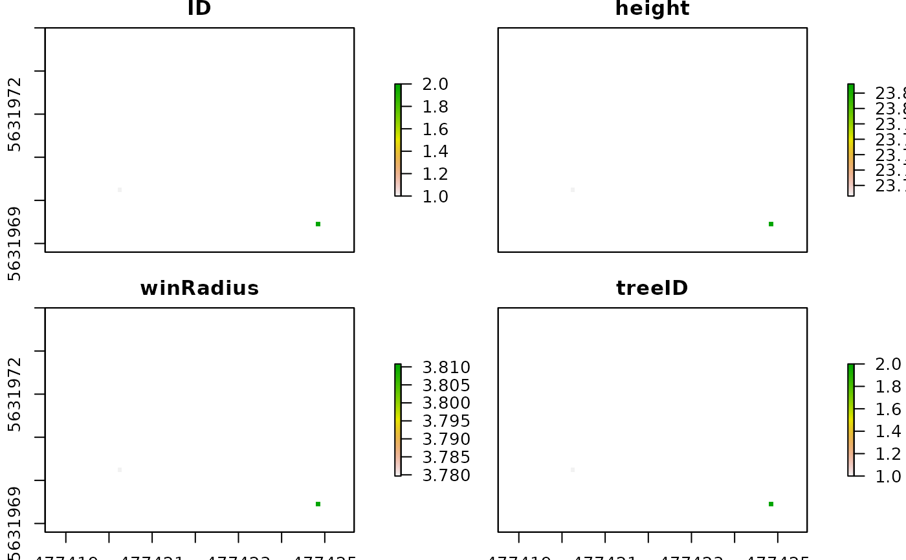

Implements the variable window filter algorithm (Popescu & Wynne, 2004)
for detecting treetops from a canopy height model. Andrew Plowright:
R package ForestTools
treepos_FT( chm = NULL, winFun = function(x) { 0.5 * ((x^2) * 0.009 + 2.51) }, minTreeAlt = 2, maxCrownArea = maxCrownArea, verbose = TRUE )
| chm | Canopy height model in |
|---|---|
| winFun | function. The function that determines the size of the window at any given location on the canopy. It should take the value of a given CHM pixel as its only argument, and return the desired radius of the circular search window when centered on that pixel. |
| minTreeAlt | Height threshold (m) below a pixel cannot be a local maximum. Local maxima values are used to define tree tops. |
| maxCrownArea | numeric. A single value of the maximum individual tree crown radius expected. |
| verbose | quiet (1)
height of |
##- required packages require(uavRst) data(chm_seg) ##- call ForestTools treepos function tposFT <- treepos_FT(chm = chm_seg[[1]], minTreeAlt = 10, maxCrownArea = 150)#> Checking inputs #> Creating windows